Stories
Three short stories, one for each open research gap. Every dot is real data: a 90 m block, about 1,000 residents, or about 1,000 roofs. Free to share with credit to Gava Charles.
Hotter by design
Kampala's most tightly packed blocks are its hottest, and the ones that packed in fastest warmed most. A 3D model shows why.

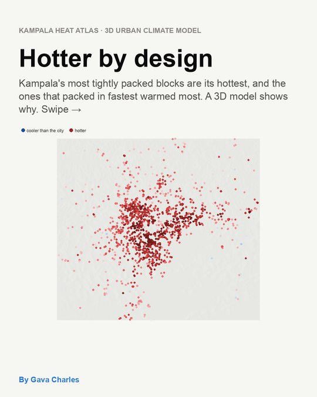
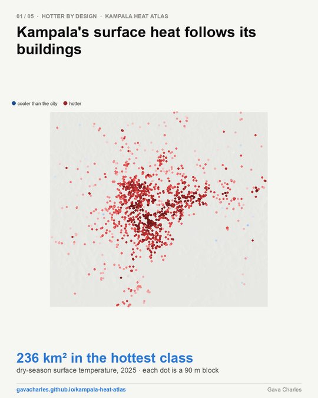
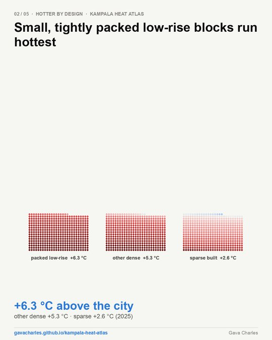
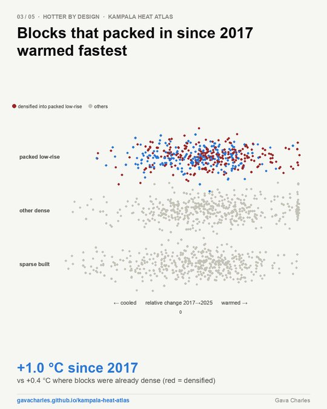
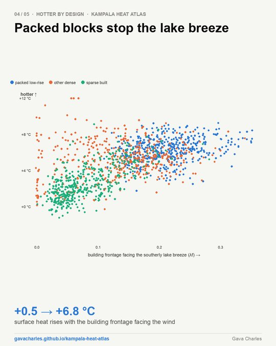
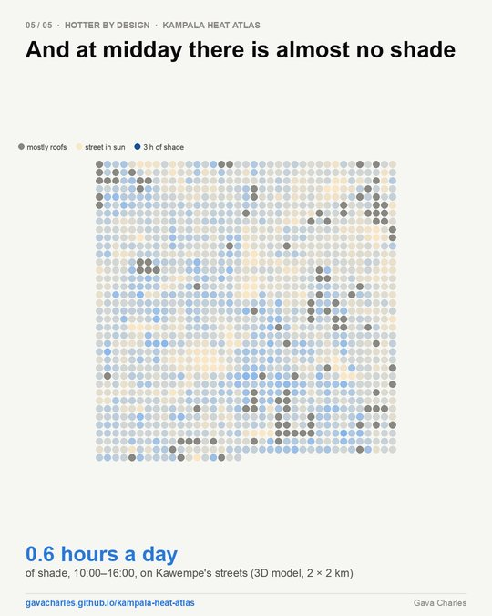
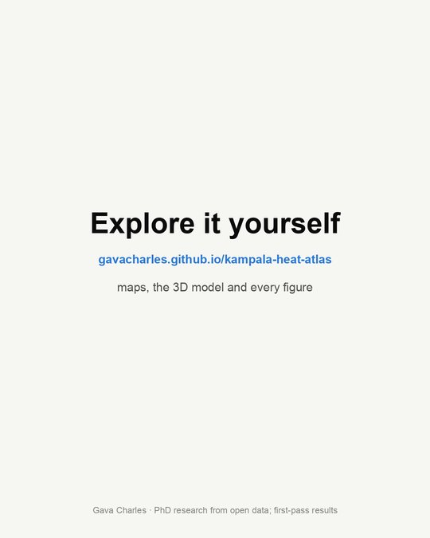
Where the next 8,000 trees go
Target planting to heat, people and open ground, and street trees take about 4 °C off the felt heat.

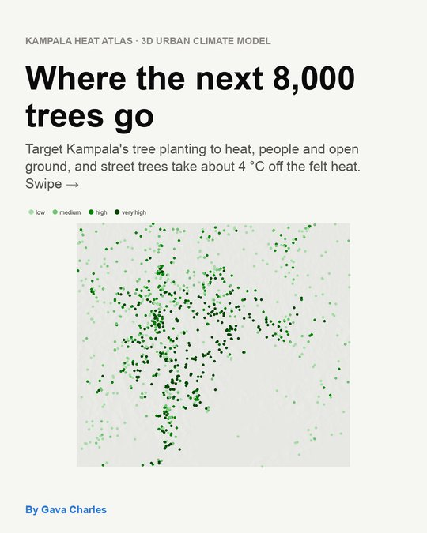
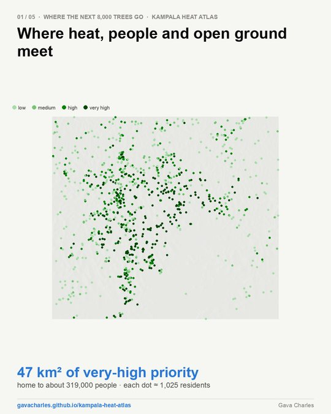
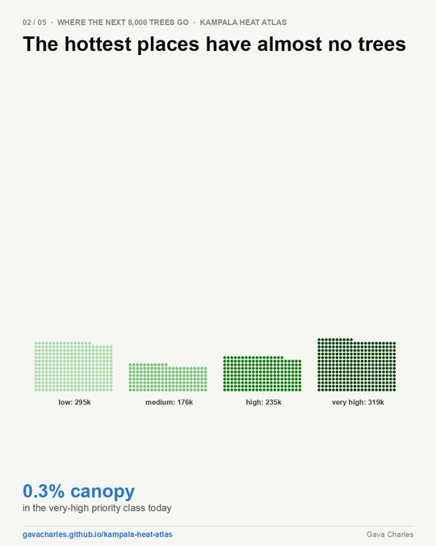
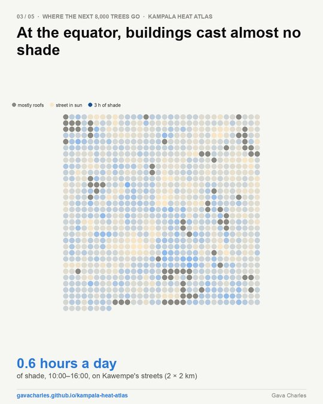
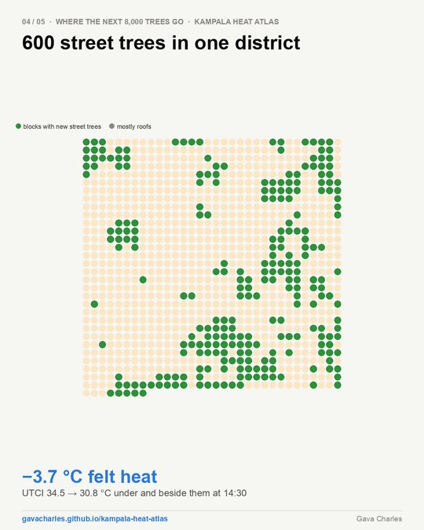
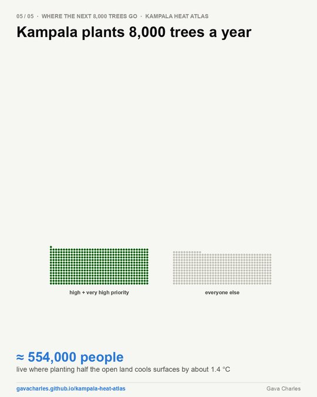

Roofs are not the constraint
Kampala's roofs could make several times Uganda's electricity. The question is what the grid can take at noon.

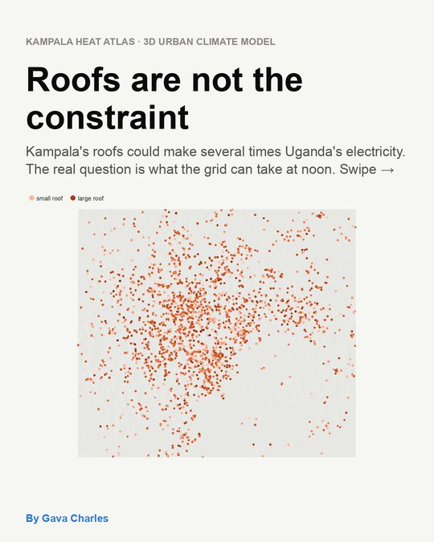
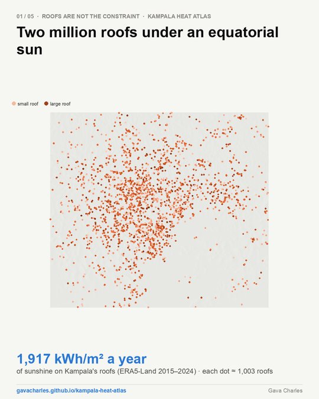
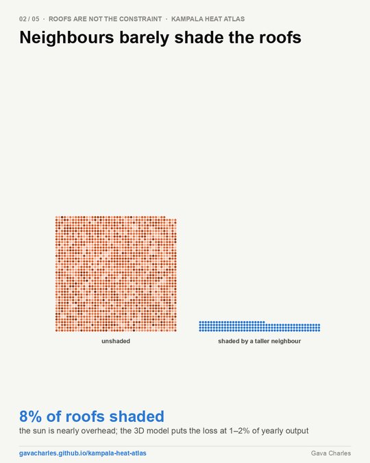
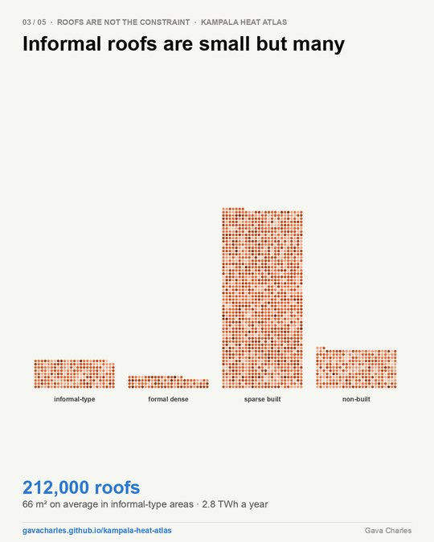
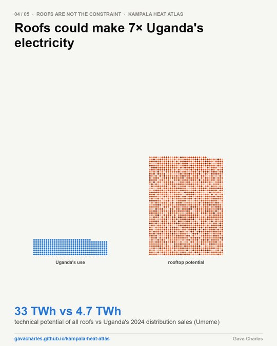
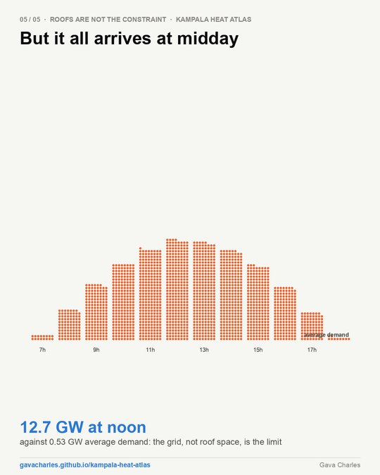